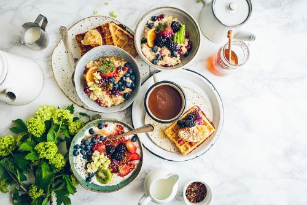
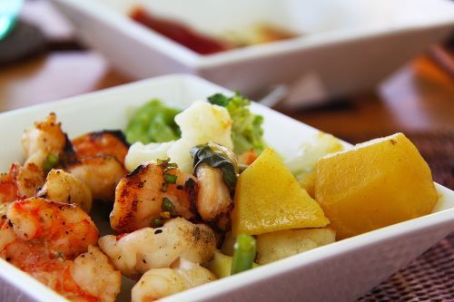
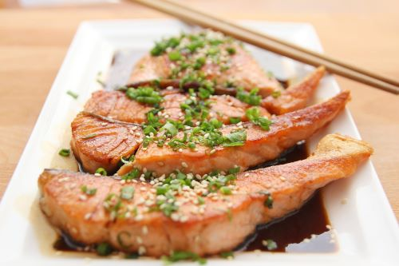
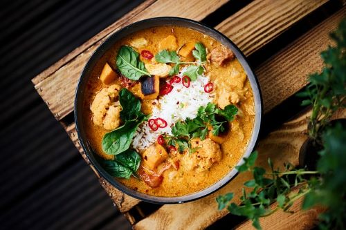

Descubre nuestra gastronomía, mientras disfrutas de nuestras impresionantes vistas
El restaurante de nuestro hotel ofrece una experiencia gastronómica inigualable en un entorno paradisíaco. Ubicado sobre aguas cristalinas y rodeado de una exuberante vegetación tropical, nuestro restaurante fusiona la belleza natural del entorno con una oferta culinaria de clase mundial






Disfrutá la sencillez y excelencia de nuestra gastronomía principal con sabores destacados
Nuestra cocina es una celebración de sabores internacionales y locales. El menú presenta una variedad de platos que van desde especialidades maldivas frescas, con mariscos recién pescados y especias locales, hasta delicias internacionales que satisfacen los paladares más exigentes. Cada plato es preparado con ingredientes de la más alta calidad y de origen local.

Disfruta de la mejor atención en el mejor lugar!